Peel logo directions
Five candidate directions, drawn with the colors in docs/ui-spec.md. None is adopted yet. Each folder holds the SVG sources and PNG exports.
1. Corner lift
An amber note whose bottom-right corner curls up. A polished version of the folded-corner placeholder in the mockups. Wordmark: Geist.
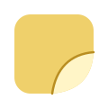
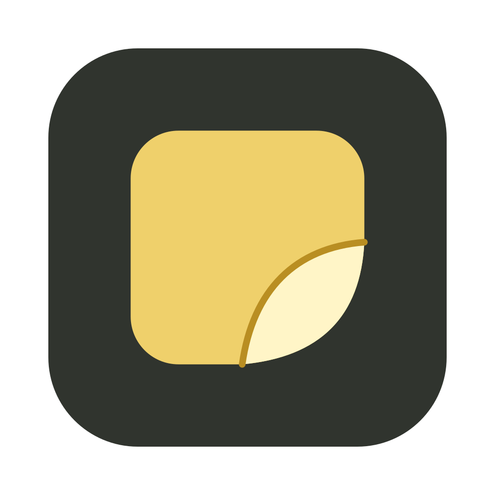
2. Note window
A note with an amber title bar, one close dot and a folded corner, like the floating note that has only a Close button. Wordmark: Instrument Sans.
3. P monogram
A bold P whose bowl carries a folded amber corner. The clearest of the five at 16 px. Wordmark: Bricolage Grotesque.
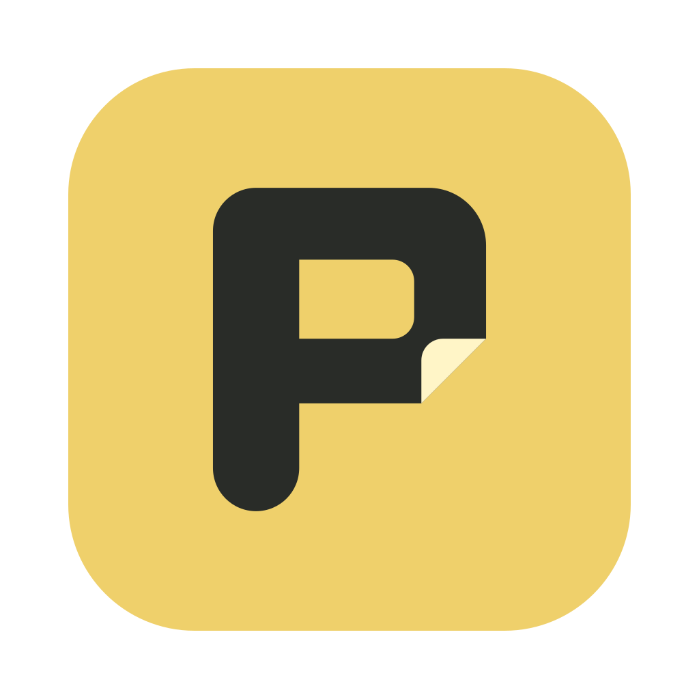
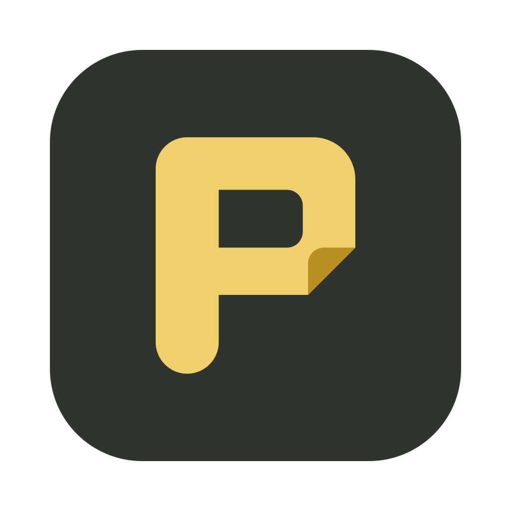
4. Two notes
An amber note over a tilted ochre one: the library plus floating notes, or two synced devices. Wordmark: Figtree.
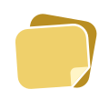
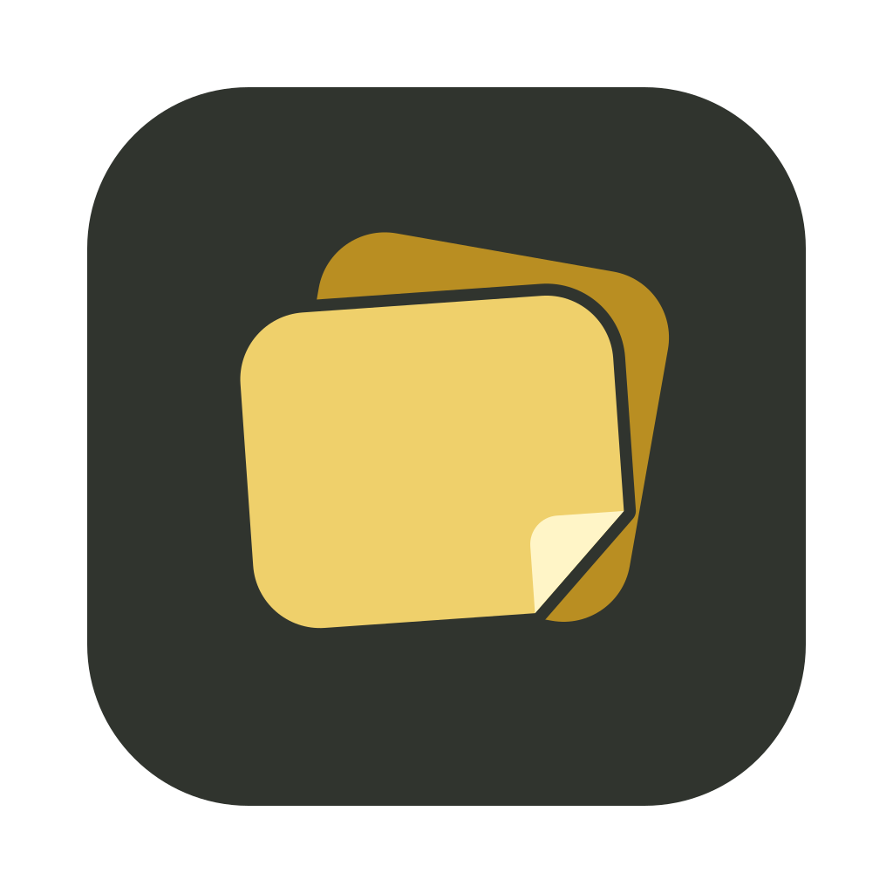
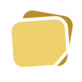
5. Peel sticker
A round amber sticker with its edge peeling back. The most distinctive shape, and the furthest from notes. Wordmark: Fraunces.
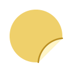
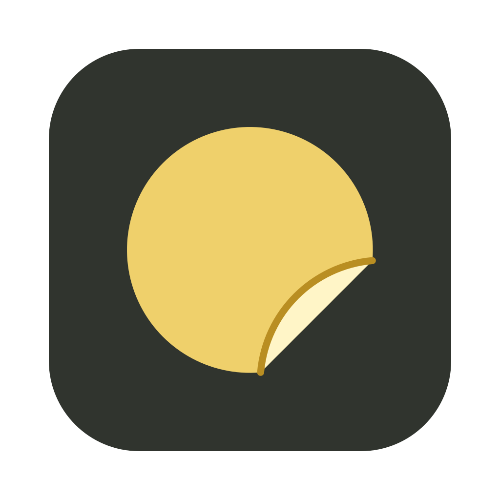